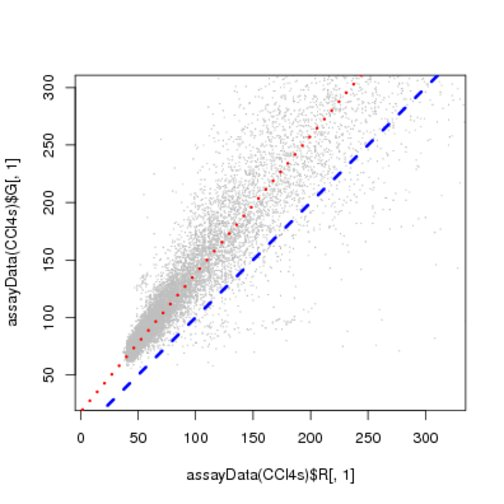

Figure 5.4:
For one of the arrays from the CCl4s dataset, the scatterplot shows the red versus the green intensities, for values up to 300. The dashed line is the intersect through the origin, y=x; the dotted line corresponds to y=18+1.2x.